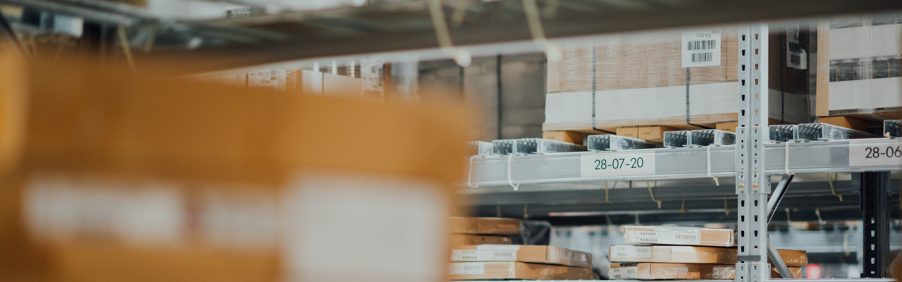
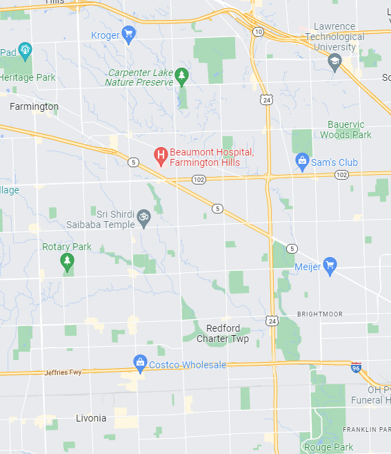

Package Delivery Router
Overview
This project routes vehicle delivery paths based on a loadout of packages. This was accomplished in several stages.
Mapping the Data
A real world map of a town was provided for the project.
The above map is around my current residence not the one used for the actual project; however, the process is still the same. Delivery hubs were identified and an adjacency map was created.
Each adjacency line was given a weight based on distance. With a weighted adjancey map, dijkstra's shortest path could now be executed.
Dijkstra's Shortest Path
Each truck will have a number of packages loaded onto it. Each package has a destination hub. First the algorithm will search to determine the shortest path for an individual package. The router looks at each adjacent hub and checks to see if that matches the destination hub. If it isn't, it will record distance of that path. From this adjacent hub, it then looks further out at hubs adjacent to this new hub. Each time a hub is checked, the value is added to the path that is "traveled" to get a total distance. When the package is found, the total distance is recorded as a possible route. After all the hubs have been visited, the algorithm has scanned the entire map and reviews the possible routes. The shortest route is then selected. This route is then reversed to create a path the truck must travel down to deliver the package. This is then recorded as the distance to deliver this package. This process is repeated for all packages loaded onto the truck. After all packages have their shortest routes determined, the algorithm selects the package with the shortest distance overall. The path to this delivery hub is recorded. The delivery hub is set as the new destination. The delivered package is removed from a queue of packages to be delivered and the process is repeated until all packages are delivered from the truck.